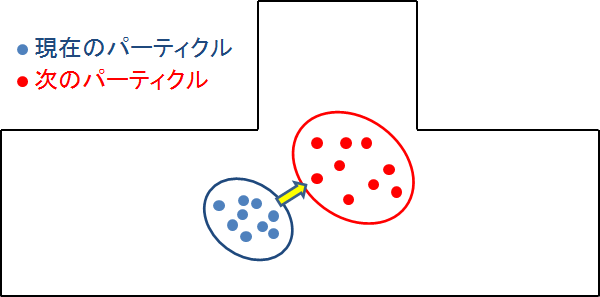
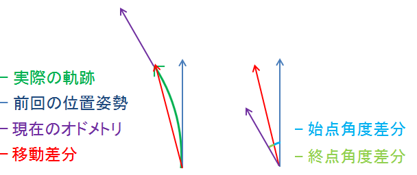
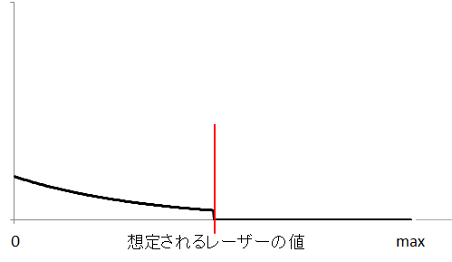
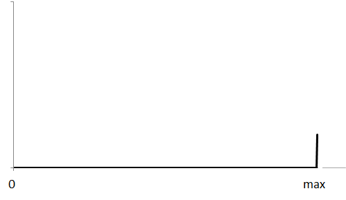
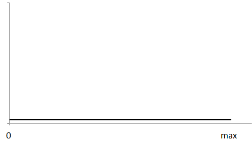
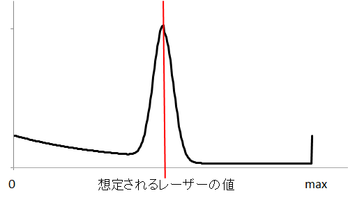
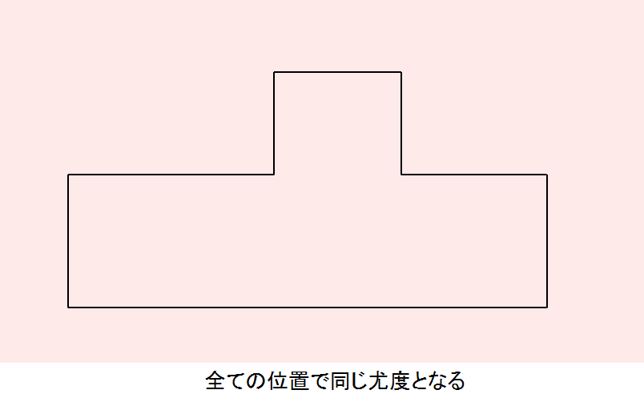
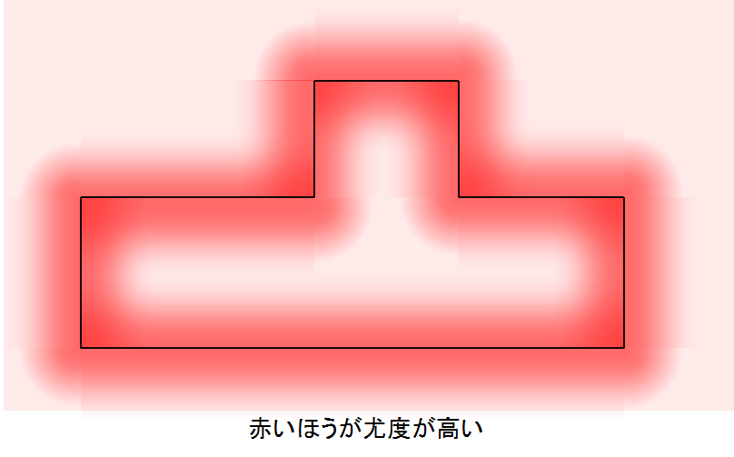
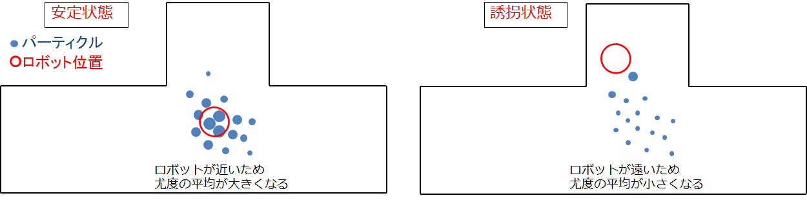
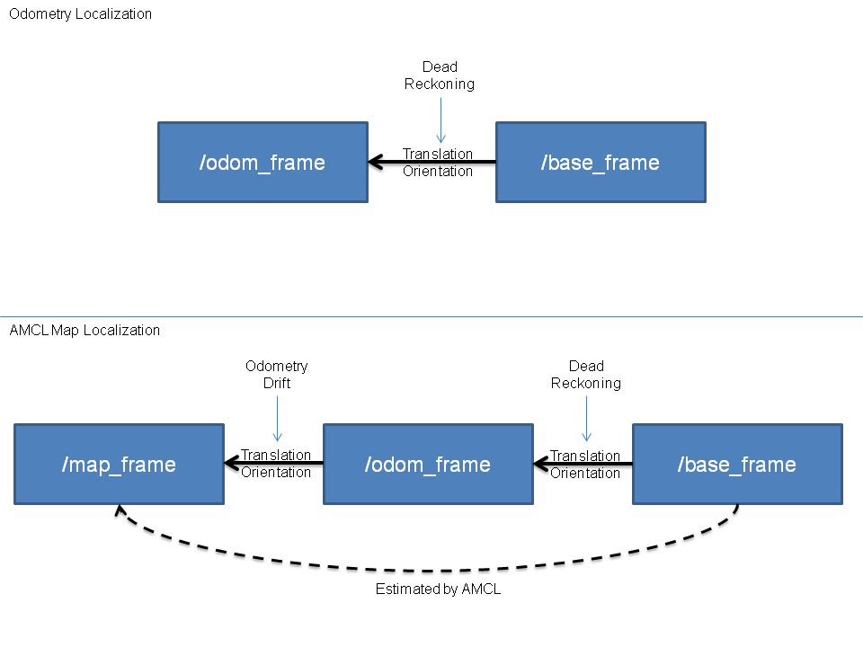

目次
amcl(adaptive Monte Carlo localization)は、2Dで移動するロボットのための確率的な位置推定システムです。 パーティクルフィルタ（またはKLDサンプリング）を使用したモンテカルロ法を用いて、既知のマップに対するロボットの姿勢の追跡を行います。このノードは、Andrew Howardの「amcl」ドライバーから派生したものとなります。
アルゴリズムとそのパラメーターの多くは、 Thrun・Burgard・Foxによる本「Probabilistic Robotics」から採用しています。 詳細を確認することをお勧めします。その本から以下のアルゴリズムを採用しています。
このノードはレーザースキャンとレーザーで作成したマップの他に、センサーデータで取得したオドメトリと連携するように拡張されています。
トピック名がbase_scanのレーザーデータを使用して実行するには以下のようにscanにトピック名を指定します。
amcl scan:=base_scan
amclで自己位置推定に使用しているパーティクルフィルタについて説明を行います。
パーティクルフィルタは逐次モンテカルロ法とも呼ばれ、逐次ベイズ推定の一種で、現在の状態から想定される多数の次状態を、多数（数百or数千）のパーティクルに見立て、全パーティクルの尤度に基づいた重みつき平均を次状態として予測しながら追跡を行っていくアルゴリズムです。パーティクルの移動の予測や外れてしまったパーティクルのリサンプリングを行うことで、ガウス性のないノイズにも強い手法となっています。
パーティクルフィルタは基本的に以下3つのサイクルを繰り返し実行することで推定を行います。予測を何回か行うごとにリサンプリングを行います。
動作モデルから求められた運動量を基に、それぞれのパーティクルを次のタイミングのパーティクルの位置に移動させます。各パーティクルで任意のノイズを仮定して，もとあった領域よりも広い領域に粒子をばら撒いていきます。各パーティクルは，「運動モデルによって想定されるロボットの位置」という状態値の仮説を表しています。
amclでパーティクルフィルタの工夫している箇所について以下で説明します。
ひとつ前のパーティクルの位置姿勢に対し、現在のオドメトリ情報により、現在のパーティクルの位置姿勢を予測します。運動モデルのタイプは"diff"、"omni"、"diff-corrected"、"omni-corrected"の4つがあります。"diff"、"omni"では、ガウシアンノイズの計算部分にバグがあったため、修正版が作成されましたが、既存のシステムに対して修正版を実行するとパラメータの調整が必要なため、バグ版も残してあります。バグ修正版ではノイズの負荷方法が異なり、元のモデルに対してルートをかけたノイズの値になります。 ここでは"diff"、"omni"の2つのモデルについて説明を行います。
diffモデルでは、オドメトリの並進速度に対する、各パーティクルへの回転速度・並進速度へのノイズ、オドメトリの回転速度に対する、各パーティクルへの回転速度・並進速度へのノイズが設定できます。前後にのみ移動するロボットに対するモデルになっているため、それ以外の方向にも移動できるロボットの場合はomniにモデルを使用したほうが良いです。
具体的な計算方法は、以下のようになります。

- 前回のamclでのヨー角に対する現在のオドメトリの移動方向の角度の差分を始点角度差分とする。
- オドメトリの移動方向の角度と現在のオドメトリの回転速度の差分を終点角度差分とする。
- 始点角度差分・終点角度差分・並進速度に対してガウシアンノイズを追加する。
- 各パーティクルにおいて、パーティクルのヨー角に始点角度差分を足した角度を移動方向とする。
- 移動方向に対して並進速度の移動量を足して、現在のパーティクルの位置姿勢を求める。
omniモデルは、オムニホイール等を使用した前後以外にも進むことのできるロボットに対応した運動モデルになります。diffで設定できるノイズの他にオドメトリの並進速度に対する、各パーティクルへの進行方向と垂直な成分のノイズが設定できます。
具体的な計算方法は、以下のようになります。
- 前回のamclでのヨー角に対する移動方向を求めるために、前回のamclでのヨー角に対する現在のオドメトリの移動方向の角度の差分を計算する。
- 角度の差分を各パーティクルのヨー角に加算して、それぞれのパーティクルでの移動方向を推定する。
- 現在のオドメトリの並進速度・回転速度から各ノイズの大きさをガウシアンフィルタを用いて計算する。
- オドメトリの値・移動方向に対する並進のノイズ・回転のノイズによって、現在のパーティクルの位置姿勢を求める。
外れたパーティクルの尤度が低すぎる場合は、リサンプリング時に外れたパーティクルが削除されすぎるため、パーティクルフィルタの安定性がなくなります。そのため、ガウシアンモデル以外のノイズも用いてレーザーの値が壁と離れている場合でも尤度を持たせています。 amclではレーザーの尤度計算にビームモデルと尤度モデルを用いた推定の2種類が選択できます。ビームモデルと尤度モデルについて説明を行います。
ビームモデルでは、「ガウシアンノイズ」と「障害物対策ノイズ」「センサの最大距離ノイズ」「ランダムノイズ」の組み合わせで使用しています。 それぞれのパーティクルの位置で各レーザの方向に伸ばしていき、マップ上で壁に当たる距離を計算し、その距離と実際のレンジの値によって尤度を計算します。そのレーザーが返ってくると期待される値によって尤度を求めていきます。壁に当たる位置はレーザーごとに異なるため、「パーティクル数」×「レーザー数」分、マップ上で壁に当たる位置を計算する必要があります。
地図上のレーザーが当たる地点より前に、地図にない障害物がありレンジの値が小さくなる場合があります。その際の尤度を大きくするため。障害物対策のノイズでは、想定されるレンジより小さな値には尤度を少し上げるようなノイズを追加します。
乱反射等によりレーザーがセンサに帰ってこなかった場合、レンジの距離はセンサの最大値が設定される場合があります。その際の尤度を大きくするため。センサの最大距離ノイズでは、センサの最大距離部分では尤度が高くなるようなノイズを追加します。
パーティクルフィルタで安定して動作させるため、ある程度外れてしまっているパーティクルがすべて削除されることがないように、想定されるレンジの値に関わらず尤度を持たせます。ランダムノイズでは、すべての距離で一律の尤度を持たせるようなノイズを追加します。
総合した尤度のモデルは以下のようになります。各レーザーごとに以下のモデルで尤度を計算していきます。
各ノイズの重みは、以下のパラメータで設定できます。実行する状況に合わせてノイズの重みを変更することができます。各重みの和が1になるようにする必要があります。
尤度モデルでは、「ガウシアンノイズ」と「ランダムノイズ」の組み合わせで使用しています。マップの座標ごとにガウシアンノイズが決定するため、ビームモデルと異なり各レーザーごと壁に当たる位置を判定する必要はなく、レーザーの当たっている位置を求めるだけでよくなります。
ランダムノイズはビームモデルと同じで、パーティクルフィルタで安定して動作させるため、ある程度外れてしまっているパーティクルがすべて削除されることがないように、想定されるレンジの値に関わらず尤度を持たせます。ランダムノイズでは、すべての距離で一律の尤度を持たせるようなノイズを追加します。
下記マップのレーザーの座標の尤度の和がパーティクルの尤度になる。尤度マップを計算した後は、各レーザーの尤度はパーティクルの位置姿勢とレーザーの値から求められる座標の尤度を参照するだけため、計算量がビームモデルに対して小さくなる。
各ノイズの重みは、以下のパラメータで設定できます。実行する状況に合わせてノイズの重みを変更することができます。各重みの和が1になるようにする必要があります。
ビームモデルは各レーザーごとに計算を行い処理に時間がかかるため、レーザー数・パーティクル数が多い状態でリアルタイムに実行したい場合は尤度モデルを使用するのが良いです。また、尤度モデルでは、障害物対策ノイズ等が使用されないため、人が多い等でマップと異なる障害物が多い場合は、ビームモデルが良いと思われます。
amclで工夫されている"Augmented_MCL"、"KLD_Sampling_MCL"について説明を行います。
Augmented MCLとは、 位置推定がうまくいっている「安定状態」と誘拐ロボット問題を含む位置を見失っている「誘拐状態」によってランダムにパーティクルを配置する割合を調整する処理です。
ロボットの状態を認識するためには、各パーティクルの尤度の平均を使用します。位置推定がうまくいっている場合は、ロボットの付近にパーティクルが多く配置されて、尤度平均は大きくなります。ロボットが想定の位置にいない場合は、多くのパーティクルがロボットの付近にいなくなるため、尤度平均は小さくなります。
Augmented MCLでは尤度平均が小さくなると、ランダムに配置するパーティクルの数を増やします。具体的には、前回より尤度平均が小さくなった段階で、2種類の平滑化係数(recovery_alpha_slow, recovery_alpha_fast)で指数移動平均を求め、その割合でランダムパーティクルの割合が決定します。指数移動平均とは、ひとつ前の重みに定数をかけることで、指数関数的に減少させる手法で、下記のように2種類の重み(weight_slow, weight_fast)を指数移動平均で求め、平滑化係数の違いによって収束速度が異なり、値の差によってランダムパーティクルの割合を決定します。
weight_slow = (1 - recovery_alpha_slow) * weight_slow + recovery_alpha_slow * (尤度平均)
weight_fast = (1 - recovery_alpha_fast) * weight_fast + recovery_alpha_fast * (尤度平均)
(ランダムパーティクルの割合) = 1 - (weight_fast / weight_slow)
weight_fastがweight_slowより大きくなった段階で、重みをすべてリセットするためランダムパーティクルの割合が負の値になることはありません。平滑化係数は大きくするほど最初の値の影響は小さくなるため、尤度が下がった際のランダムパーティクル割合はrecovery_alpha_fast、recovery_alpha_slowの値によって制御できます。
amclは、レーザーマップ、レーザースキャンデータ、および位置姿勢情報を取り込み、姿勢推定値を出力します。 起動時に、 amclは設定されたパラメーターに従ってパーティクルフィルターの初期化を行います。 パラメーターが設定されていない場合、初期フィルター状態は、（0,0,0）を中心とする中程度のサイズのパーティクル群になります。
| トピック名 | 型 | 内容 |
|---|---|---|
| scan | sensor_msgs/LaserScan | レーザースキャンデータ |
| tf | tf/tfMessage | 位置姿勢情報 |
| initialpose | geometry_msgs/PoseWithCovarianceStamped | パーティクルフィルタを(再)初期化する際の平均と共分散 |
| map | nav_msgs/OccupancyGrid | パラメータ「use_map_topic」にtrueが設定されると、 AMCLはこのトピックをサブスクライブして、レーザーベースの位置推定に使用するマップを取得します。 |
| トピック名 | 型 | 内容 |
|---|---|---|
| amcl_pose | geometry_msgs/PoseWithCovarianceStamped | マップ内のロボットの推定ポーズと共分散 |
| particlecloud | geometry_msgs/PoseArray | 推定を行っているパーティクル群 |
| tf | tf/tfMessage | 「odom」から「map」への位置情報 |
| トピック名 | 型 | 内容 |
|---|---|---|
| global_localization | std_srvs/Empty | 全体的な位置推定を行う。すべてのパーティクルはマップ内の空きスペースにランダムに分散されます。 |
| request_nomotion_update | std_srvs/Empty | パーティクルフィルタ更新を手動で実行し、更新されたパーティクルをPublishします。 |
| set_map | nav_msgs/SetMap | 手動で新しいマップとポーズを設定します。 |
| トピック名 | 型 | 内容 |
|---|---|---|
| static_map | nav_msgs/GetMap | このサービスを呼び出しすことにより、レーザーベースの位置推定に使用されるマップが取得できます。 スタートアップ時は、このサービスからマップを取得します。 |
amclノードの構成に使用できるROS パラメーターには、フィルター全体、レーザーモデル、オドメトリモデルの3つのカテゴリがあります。
| パラメータ名 | 内容 | 型 | 単位 | デフォルト |
|---|---|---|---|---|
| ~min_particles | パーティクルの最小数 | int | － | 100 |
| ~max_particles | パーティクルの最大数。パーティクル数は精度に大きな影響を与えるが、最大数を大きくしすぎた場合CPUの負荷の問題が発生する場合があります。 | int | － | 5000 |
| ~kld_err | 推定位置の誤差の度合い。大きくするとパーティクル数が少なくなります。倍にするとパーティクル数が約半分になります。 | double | － | 0.01 |
| ~kld_z | 上側標準正規分位数。kdl_zとセットで用いられる推定計算係数。大きくするとパーティクル数が少し多くなります。 | double | － | 0.99 |
| ~update_min_d | パーティクルフィルタの更新(予測)を実行するかを判定する移動距離の閾値。更新時、ある程度の前回との差分がないと予測が収束してしまい、間違った観察位置で固定されてしまいます。オドメトリトピックの発信頻度が高ければ(30Hzくらいあれば)デフォルトの値で問題ありません、低い場合は値を大きくします。 | double | m | 0.2 |
| ~update_min_a | パーティクルフィルタの更新(予測)を実行するかを判定する回転角度の差の閾値。更新時、ある程度の前回との差分がないと予測が収束してしまい、間違った観察位置で固定されてしまいます。オドメトリトピックの発信頻度が高ければ(30Hzくらいあれば)デフォルトの値で問題ありません、低い場合は値を大きくします。 | double | rad | π/ 6.0 |
| ~resample_interval | リサンプリングを行うかを判定するパーティクルフィルタが更新(予測)された回数。オドメトリの精度がよい場合は予測の精度がよくなるため、値を大きくしても問題ありません。 | int | － | 2 |
| ~transform_tolerance | 入力となるトピック群の時間誤差の許容値。各センサデータの間隔が長い場合はこの値を伸ばして調整する必要があります。センサ側の性能を調整するほうが方向性としては正しいです。 | double | s | 0.1 |
| ~recovery_alpha_slow | リサンプリング時のランダムパーティクルの割合計算に使用する低速指数移動平均の平滑化係数。無効にする場合は0.0を指定します。指定する場合、適切な値は0.001です。 | double | － | 0.0 |
| ~recovery_alpha_fast | リサンプリング時のランダムパーティクルの割合計算に使用する高速指数移動平均の平滑化係数。無効にする場合は0.0を指定します。指定する場合、 適切な値は0.1です。 | double | － | 0.0 |
| ~initial_pose_x | ガウス分布でフィルターを初期化するために使用する初期x座標平均。実行する際の初期値を設定します。 | double | m | 0.0 |
| ~initial_pose_y | ガウス分布でフィルターを初期化するために使用する初期y座標平均。実行する際の初期値を設定します。 | double | m | 0.0 |
| ~initial_pose_a | ガウス分布でフィルターを初期化するために使用する初期ヨー角平均。実行する際の初期値を設定します。 | double | rad | 0.0 |
| ~initial_cov_xx | ガウス分布でフィルターを初期化するために使用する初期x座標共分散。基本的にデフォルト値で問題ありません。 | double | m^2 | 0.5*0.5 |
| ~initial_cov_yy | ガウス分布でフィルターを初期化するために使用する初期y座標共分散。基本的にデフォルト値で問題ありません。 | double | m^2 | 0.5*0.5 |
| ~initial_cov_aa | ガウス分布でフィルターを初期化するために使用する初期ヨー角共分散。基本的にデフォルト値で問題ありません。 | double | rad^2 | (π/12)*(π/12) |
| ~gui_publish_rate | 視覚化のためにスキャン結果と軌跡がPublishされる最大レート。無効にする場合は-1.0を指定します。視覚化の要素のため精度には影響しません。 | double | Hz | -1.0 |
| ~save_pose_rate | 変数initial_pose_*およびinitial_cov_*に対して、サーバーへの最後の推定ポーズと共分散を保存する最大レート。この保存されたポーズは、以降の実行でフィルターを初期化するために使用されます。無効にする場合は-1.0を指定します。 | double | Hz | 0.5 |
| ~use_map_topic | trueに設定すると、起動時にマップを読み込むのではなく、Subscribeしたマップを使用します。システム起動中に地図切替を行いたい場合はtrueにします。 | bool | － | false |
| ~first_map_only | trueに設定すると、Subscribeするたびに新しいマップに更新するのではなく、最初のマップのみを使用します。 | bool | － | false |
重みの合計は1になるようにしてください。ビームモデルでは、z_hit、z_short、z_max、z_randのすべての重みを使用します。 尤度モデルは、z_hitとz_randのみを使用します。
| パラメータ名 | 内容 | 型 | 単位 | デフォルト |
|---|---|---|---|---|
| ~laser_min_range | 最小スキャン範囲。レーザー値が指定値以下の場合、レーザーの最大値の値(laser_max_range)を設定します。 0以下の値を指定すると、トピック（LiDAR）に設定されているレーザーの最小範囲が使用されます。基本的にトピックで設定されている値を使用するほうが良いです。 | double | m | -1.0 |
| ~laser_max_range | 最大スキャン範囲。0以下の値を指定すると、トピックに設定されているレーザーの最大範囲が使用されます。基本的にトピックで設定されている値を使用するほうが良いです。 | double | m | -1.0 |
| ~laser_max_beams | レーザー1セットごとに等間隔に取得したサンプル個数。比較的精度の高いLiDARなら増やしたほうが良い成果になりやすいです。 | int | － | 30 |
| ~laser_z_hit | ビームの尤度を計算する際の、ガウシアンノイズの重み。ROSのチュートリアルで使用されている設定値を使用することが多いです。 | double | － | 0.95 |
| ~laser_z_short | ビームの尤度を計算する際の、障害物対策ノイズの重み。likelihood_fieldモデルでは使用されません。ROSのチュートリアルで使用されている設定値を使用することが多いです。 | double | － | 0.1 |
| ~laser_z_max | ビームの尤度を計算する際の、センサ最大距離ノイズの重み。likelihood_fieldモデルでは使用されません。ROSのチュートリアルで使用されている設定値を使用することが多いです。 | double | － | 0.05 |
| ~laser_z_rand | ビームの尤度を計算する際の、ランダムノイズの重み。ROSのチュートリアルで使用されている設定値を使用することが多いです。 | double | － | 0.05 |
| ~laser_sigma_hit | ガウシアンノイズの標準偏差。ROSのチュートリアルで使用されている設定値を使用することが多いです。 | double | － | 0.2 |
| ~laser_lambda_short | z_shortによる尤度加算の分布を調整するパラメータ。ROSのチュートリアルで使用されている設定値を使用することが多いです。 | double | － | 0.1 |
| ~laser_likelihood_max_dist | LikelihoodField生成の際に、障害物からフィールドを広げる距離。ROSのチュートリアルで使用されている設定値を使用することが多いです。 | double | m | 2.0 |
| ~laser_model_type | beam 、 likelihood_field 、 likelihood_field_prob内の使用するモデル。基本的にlikelihood_fieldモデルを使用します。 | string | － | likelihood_field |
odom_model_typeが「diff」の場合、「Probabilistic Robotics」p136のsample_motion_model_odometryアルゴリズムを使用します。 このモデルでは本で定義されているように、 odom_alpha1からodom_alpha4までのノイズパラメーターを使用します。odom_model_typeが「omni」の場合、 odom_alpha1~odom_alpha5を使用します。最初の4つのパラメーターの意味は、 「diff」モデルの際の意味とほぼ同じです。 5番目のパラメーターは、向いている方向に移動するロボットに対するパラメータとなります。 「diff-corrected」および「omni-corrected」では、ノイズが元のモデルに対してルートをかけたものになっているため、odom_alphaパラメーターはデフォルト設定のままでは、うまく機能しないと思われます。これらの値をおそらくもっと小さくする必要があります。http://answers.ros.org/question/227811/tuning-amcls-diff-corrected-and-omni-corrected-odom-models
| パラメータ名 | 内容 | 型 | 単位 | デフォルト |
|---|---|---|---|---|
| ~odom_model_type | 使用するオドメトリモデル。 diff 、omni 、diff-corrected、omni-correctedのいずれかが設定できます。新規で使用する場合は、*-correctedを使用したほうが良いと思われます。 | string | － | diff |
| ~odom_alpha1 | 現在のロボットの動きの回転成分から、計算するオドメトリの回転成分に対するノイズ。 大きくするとロボットの回転が大きい時にオドメトリの回転の信頼度が下がります。オドメトリのノイズやエンコーダの反応が遅いなどの場合は、2.0や5.0など、かなり大きい値を指定した方が良い結果となる傾向があります。 | double | － | 0.2 |
| ~odom_alpha2 | 現在のロボットの動きの並進成分から、計算するオドメトリの回転成分に対するノイズ。 大きくするとロボットの平行移動が大きい時にオドメトリの回転の信頼度が下がります。オドメトリのノイズやエンコーダの反応が遅いなどの場合は、2.0や5.0など、かなり大きい値を指定した方が良い結果となる傾向があります。 | double | － | 0.2 |
| ~odom_alpha3 | 現在のロボットの動きの並進成分から、計算するオドメトリの平行移動成分に対するノイズ。 大きくするとロボットの平行移動が大きい時にオドメトリの平行移動の信頼度が下がります。よほどスリップするような環境でなければ、直線方向の誤差は出にくいです。 | double | － | 0.2 |
| ~odom_alpha4 | 現在のロボットの動きの回転成分から、計算するオドメトリの平行移動成分に対するノイズ。 大きくすると推定しているロボット回転が大きい場合にオドメトリの平行移動の信頼度が下がります。よほどスリップするような環境でなければ、直線方向の誤差は出にくいです。 | double | － | 0.2 |
| ~odom_alpha5 | ホロノミック体の場合の直線（y軸）誤差。（モデルがomniの場合にのみ使用）よほどスリップするような環境でなければ、直線方向の誤差は出にくいです。 | double | － | 0.2 |
| ~odom_frame_id | オドメトリ原点座標のフレーム名 | string | － | odom |
| ~base_frame_id | ロボットベース原点座標のフレーム名 | string | － | base_link |
| ~global_frame_id | 地図原点座標のフレーム名 | string | － | map |
| ~tf_broadcast | TF情報をpublishするか否か | bool | － | true |
amclがPublishするtfメッセージは。グローバルフレーム（~global_frame_id）とオドメトリーフレーム（~odom_frame_id）間のメッセージになります。amclが推定を行うのはレーザーセンサの位置のため、レーザーセンサ-ベースフレーム（~base_frame_id）間・ベースフレームーオドメトリ間のtfのパスが必要になります。一般的にグローバルフレームはマップ、ベースフレームはロボットを表します。
最初のレーザースキャンを受信すると、 amclはレーザーセンサ-ベースフレームの間のtfを検索し、そのtfの値を更新せず使用し続けます。 そのため、 amclはレーザーがロボット上で動くことができ、ロボットと異なる動きをするレーザーに対しては使用できません。
以下の図は、オドメトリとamclを使用した位置推定の違いを示しています。 amclがPublishするのはグローバルフレームとオドメトリーフレームの間のtfのみです。 基本的に、このtfはデッドレコニングを使用して発生するドリフトを考慮に入れたものになります。
{kind=link}
{kind=link}
{kind=link}
{kind=link}
{kind=link}
{kind=link}
{kind=link}
{kind=link}
{kind=link}
{kind=link}
{kind=link}
{kind=link}
{kind=link}
{kind=link}
{kind=link}
{kind=link}
{kind=link}